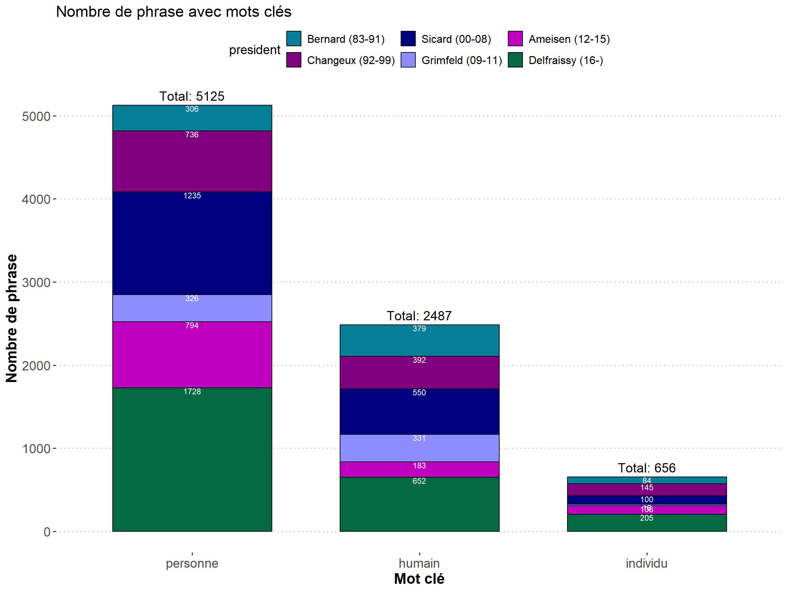

Quelques informations sur les avis du CCNE
1 Retour aux choix
2 Taille des avis au cours du temps
3 Nombre d’avis
3.1 Selon le thème
3.2 Selon le président
4 Taille des avis par président
4.1 Nombre de pages
4.2 Nombre de phrases
5 Autres informations sur les avis par président
5.1 Nombre de graphiques par président
5.2 Nombre de dissensus par président
6 Phrases d’intérêt
6.1 Nombre total de phrases d’intérêt
